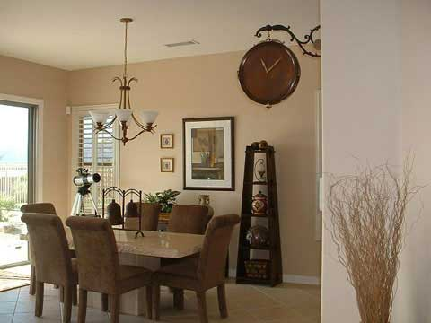

Real Estate
This dining room in a luxurious residence is not just a space for enjoying meals, but also a canvas for creating unforgettable moments with family and friends. The room features timeless elegance, blending classic aesthetics with modern sophistication, with elegant furnishings, rich textures, and carefully curated details. The dining room offers ample seating, fostering conversation and connection, and is bathed in natural light during the day and aglow with tasteful lighting in the evening. Large windows frame views of the surrounding landscape, creating a seamless connection to the outdoors.The dining room is designed for versatility, accommodating formal dinners, casual brunches, and more. Its adaptable layout and thoughtful design make it an ideal backdrop for any dining experience. The dining room is connected to the kitchen or other entertaining spaces, ensuring seamless hosting and serving. This dining room is not just a space for meals; it's a stage for creating cherished memories. Imagine holiday feasts with loved ones, intimate dinners by candlelight, and celebrations that linger into the night. This dining room elevates every meal into a special occasion, making it a focal point of your home's charm and character.
Call us at 1-555-NEW-HOME or e-mail us at hometour@isp.com for more information or to schedule a showing.
